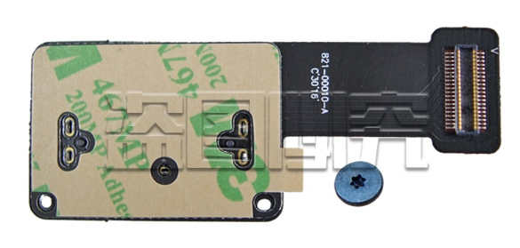
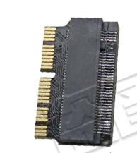
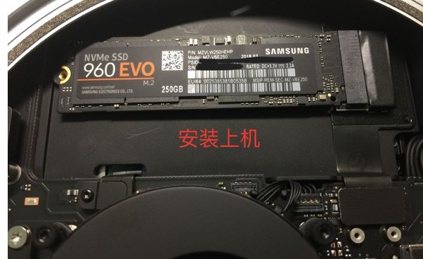
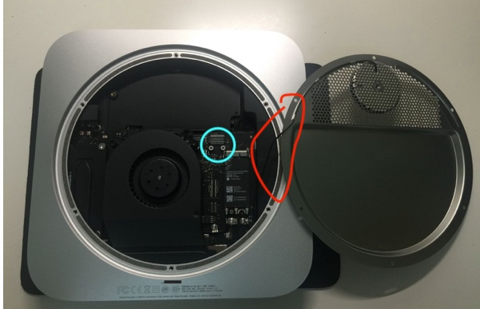
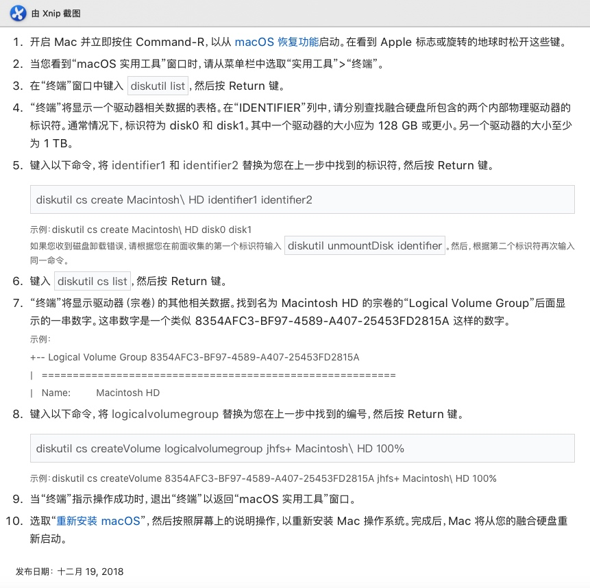

我买的是Mac Mini（late 2014）中配，内置5400转1T机械硬盘，该配置即使到了2019年安装macOS Mojave系统依旧是够用的，但硬盘严重拖累了运行的速度。之前考虑到更换内置sata接口硬盘的操作略微繁琐，因此使用外置SSD的方式，将系统安装在外置SSD上，速度的确得到了提升，但是当涉及到USB拷贝之类操作的时候影响很大，而且USB3.0对2.4G Wi-Fi有干扰。后来看到了可以在只拆开后盖的情况下安装NVMe固态，于是购买材料并试验成功。
前期准备
前期准备主要参考了这篇文章带你飞！【Mac mini 2014 late 加装PCIe SSD纪实】
并根据实际做了些修改
硬盘的选择
网上成功的经验大部分使用的是三星 960 EVO和因特尔 760P，970系列的也有试验可行的先例，但是！！！目前不要买970 Evo Plus，该型号太新了，不兼容，装不上macOS。三星的速度会快一些，但很多会遇到休眠问题，因特尔的速度慢一些但相对稳定，发热更少。我便是退了970 Evo Plus买了760P 256G，安装到现在没有遇到问题，虽然测速写入最多500。
当然也可以购买苹果自己的拆机硬盘，这样后续不需要买转接卡了。
购买渠道和价格：京东自营 ¥399
硬盘线和转接卡
在将硬盘插入电脑上之前还需要一个PCIe接口硬盘线型号821-00010-A，如下图所示

如果是买的苹果自己的硬盘，那可以直接安装在这个硬盘线上，但是第三方的NVMe硬盘还需要一个转接卡，因为接口不匹配，如下图

整合后的效果盗一张别人的图

购买渠道和价格：苹果A1347 mac mini 加SSD 固态硬盘 连接线 PCIE接口821-00010-A ¥85+8 这一家的套餐直接包含了硬盘线和转接卡，同时还包括了工具，因此不存在买错不匹配的问题，也不需要另外购买工具，但是需要8元运费。
上手安装
拆除后盖
- 最外层的黑色后盖非常好拆，使用工具撬一下即可。
- 打开后需要用到螺丝刀，螺丝比较特殊，外六角内突起，总共6个螺丝。
- 接着要揭开金属后盖，注意！金属后盖上连着Wi-Fi模块的线，需要小心打开，下图红色标记，Mac mini放正的情况下从左侧小心揭开。打开后就能看到蓝色标记的PCIe接口 
安装硬盘
将硬盘、转接卡和硬盘线三者合体，安装上去，安上螺丝即可。这里各个部分需要稍微用点力，否则容易出现未卡死位置不匹配的情况。
组融合硬盘
⚠️注意下述方法会抹除所有内容，务必注意备份
- 首先需要在内置硬盘上安装Mojave系统并且进入系统对新安装的固态进行初始化，至少也需要在High Sierra的环境下，因为更旧的版本无法支持第三方该接口的固态。
接着按照如何修复拆分的融合硬盘中的第二种通用方法进行组Fusion Drive融合硬盘。
回到之前页面进行系统安装
By JZ
Less is more